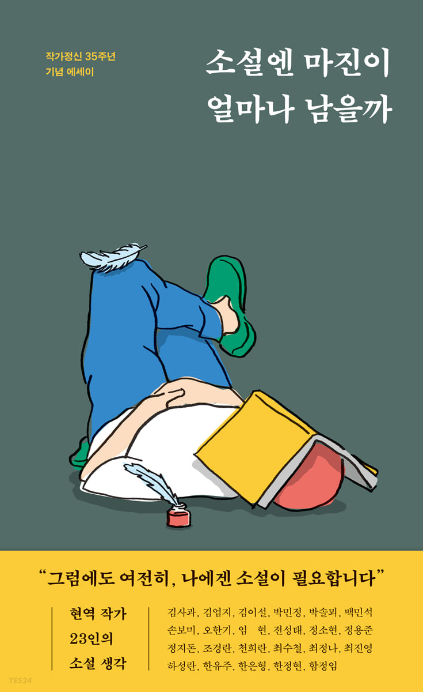

도서정보
책소개
“그럼에도 여전히, 나에겐 소설이 필요합니다”
현역 작가 23인의 소설 생각
작가정신 35주년 기념 에세이 『소설엔 마진이 얼마나 남을까』가 출간되었다. 김사과, 김엄지, 김이설, 박민정, 박솔뫼, 백민석, 손보미, 오한기, 임현, 전성태, 정소현, 정용준, 정지돈, 조경란, 천희란, 최수철, 최정나, 최진영, 하성란, 한유주, 한은형, 한정현, 함정임 등 한국 대표 소설가 23인의 에세이를 엮은 책이다.
『소설엔 마진이 얼마나 남을까』는 작가정신 창립 35주년을 맞아 기획되었다. 문학을 사랑하는 독자라면 하나의 세계를 창조해내는 소설가들은 어떻게 세상을 바라보고 삶을 관통하는지, 그들의 ‘작가정신’이 궁금하지 않을 수 없을 것이다. 이 책은 소설을 쓸 때의 생각과 마음부터 창작 과정 및 작가적 정체성에 이르기까지 ‘우리가 사랑하는 작가들의 모든 것’을 담았다.
23인 작가들의 소설 생각은 그들이 쓰는 소설만큼이나 형식이나 내용에 있어 자유롭고 다채롭다. 소설을 쓰는 데 필수적인 소설을 쓰지 않는 시간(임현), 소설을 위한 낙서와 시적 단상들(정용준), 지금과는 다른 이해의 건너편으로 이동하기 위한 소설 작법(천희란), 소설을 마무리하는 데 필요한 ‘인정’과 ‘단념’(최진영), 여성으로서의 공포와 사회적 약자로서의 불안을 형상화한 소설의 주제(하성란), 무언가에 미쳐 열중하는 사람들이 있는 소설이 잘 써지는 자리(한은형) 등 한국 문학의 어제와 오늘을 이루고 있는 작가들의 진솔하면서도 속 깊은 이야기를 들려준다.
또 하나 눈여겨볼 만한 점은 글과 함께 어우러진 사진이다. 해당 글의 작가들이 대부분 손수 찍어 제공한 사진들은 책상과 책장, 집필 도구 등이 담긴 작업실 풍경부터 소설을 쓰기 전이나 쓰는 중에 자주 찾는 곳, 글쓰기에 영감을 준 사물과 작가의 모습이 담긴 사진 등 그 종류도 다양하다. 내가 좋아하는 작가들이 어떤 공간에서 글을 쓰고 읽으며, 어떤 길을 걷고 생각하는지 독자와 함께 나누는 즐거움을 선사해줄 것이다.
우리는 왜 소설을 읽고 그들의 이야기에 귀 기울이는가. 또한 소설은 작가 자신에게 그리고 우리들에게 어떤 마진, 즉 ‘이익’을 남기는 걸까. 이 책의 제목이기도 한 ‘소설엔 마진이 얼마나 남을까’라는 질문에 대한 답은 여러 가지가 있겠지만, 그중 하나는 “꿈을 꿀 수 있게 한다”는 것이다. ‘꿈’과 ‘이익’은 언뜻 거리가 멀어 보이지만, 유한한 존재로서 살아가는 인간으로 하여금 다른 나, 다른 삶, 다른 세상을 꿈꿀 수 있게 한다는 것만큼 가치로운 이윤이 또 있을까. 최진영 작가의 말대로 우리는 “소설을 통해 꿈꿀 수 있다, 계속하여 꿈꿀 수 있다”. 우리와 함께 꿈을 꾸고, 그 꿈을 이야기로 들려주는 소설가들이 우리 곁에 있는 한.
top ↑
리뷰/한줄평
출판사 리뷰
매일 여섯 시간의 작업 루틴,
사주팔자와 번아웃,
암살자처럼 글쓰기,
소설이 잘 써지는 자리……
우리가 사랑하는 작가들의 ‘모든 것’!
김이설 작가는 매일 여섯 시간의 작업 루틴을 만들기까지 15년의 시간이 필요했다고 고백한다. 성실과 근면으로 임해온 지난 시간들은 인스타그램에 올린 500여 개의 작업 일지에 차곡차곡 담겨 있다. 이 과정에서 남은 것은 스스로에 대한 대견함만이 아니다. 피드를 본 동료나 후배 작가들의 응원과 감사의 메시지가 함께했다. ‘오래 같이 쓰기 위하여’ 김이설 작가는 오늘도 작업 일지 쓰는 걸 멈출 수가 없다.(김이설, 「더도 말고 덜도 말고 여섯 시간」)
손보미 작가는 데뷔 이후 처음으로 펑크를 낸 경험을 풀어놓는다. 작가가 되기 전 본 사주에서 ‘결혼해서 돈이나 쓰고 살 팔자’라는 말을 들었지만, 사주와 달리 작가가 되었고 그 뒤 왕성하게 활동을 이어갔다. 그러던 어느 날 3000자짜리 원고의 마감을 앞두고 난생처음 펑크를 내게 된다. 작가는 번아웃이 왔음을 인정하고 받아들일 수밖에 없었다고 술회하면서, 삐걱대고 불안할지언정 글을 쓰고 마침표를 찍을 수 있음에 감사해한다.(손보미, 「사십 편 이상의 장편소설과 수많은 단편소설, 시, 희곡」)
집 안에서 아이를 돌보며 글쓰기를 병행하는 오한기 작가는 암살자 같은 태도로 글을 써야 했다고 말한다. 암살자가 타깃에 접근하듯 언제 어디서든 빠르게 글을 쓸 수 있도록 ‘워밍업’을 해둬야 한다면서. 하지만 아이의 “최종 컨펌이 떨어진” 빡빡한 육아 일정 속에서도 그는 소설 쓰는 삶을 포기할 수 없다. 생활인이자 작가로서 소설 쓰기를 계속 이어나가는 일의 지난함이 고스란히 드러난 이 글에서 작가는 소설 쓰기를 통해 얻는 순수 이익, 즉 ‘소설의 마진’에 관해 논한다.(오한기, 「소설엔 마진이 얼마나 남을까」)
오늘을 고민하고, 살아가는 소설가들이
다시 ‘작가의 말’을 쓰는 시간
우리가 사랑하는 작가들이 사랑하는 작가는 누굴까. 박솔뫼 작가는 로베르토 볼라뇨를 좋아하는 사람들에 관해 말한다. 그들 중 한 명이 바로 박솔뫼 작가 자신인데, 소설에도 종종 등장하는 볼라뇨는 그에게‘용기와 대범함’이라는 값의 최대치를 설정해주곤 하는 존재다.(박솔뫼, 「쓰고 읽고 말하고 읽고 쓰고」) “무엇을 하든 나의 감정과 의지는 책이 있는 쪽으로 기울었다”는 조경란 작가는 ‘작가의 말’을 쓰는 시간이 자신에게 어떤 의미를 갖는지 전해주고(조경란, 「‘작가의 말’과 신발」), 정지돈 작가는 “궁상맞고 지질하고 위악적이고 냉소적이며 불행한” 트윗 이미지를 가져와 글 쓰는 마음이 무엇인지 유머러스하게 풀어나간다.(정지돈, 「포기의 글쓰기」)
소설가들의 시작점도 뭉클한 감동을 준다. 전성태 작가는 “운명이라는 생각에 사로잡”혀 작가의 길을 선택하던 열아홉 살 저편의 일을 회고하며 그동안 잊고 지내온 존 윌리엄스의 ‘스토너’와 같은 젊은 초상을 떠올리고,(전성태, 「떠나온 자로서」) 정소현 작가는 “제가 아는 게 다인 줄” 착각한 소통 불능의 여학생이었던 자신을 끌어안으며 작가의 길로 이끈, 1994년 여름의 기록적인 폭염에 대해 쓰고 있다.(정소현, 「쉽게 배운 글은 쉽게 글을 쓰지 못하게 한다」)
top ↑
배송/반품/교환
배송안내
| 배송 구분 | YES24 배송
|
|---|---|
| 포장 안내 |
안전하고 정확한 포장을 위해 CCTV를 설치하여 운영하고 있습니다. 고객님께 배송되는 모든 상품을 CCTV로 녹화하고 있으며, 철저한 모니터링을 통해 작업 과정에 문제가 없도록 최선을 다 하겠습니다. 목적 : 안전한 포장 관리 촬영범위 : 박스 포장 작업 |
반품/교환 안내
※ 상품 설명에 반품/교환과 관련한 안내가 있는경우 아래 내용보다 우선합니다. (업체 사정에 따라 달라질 수 있습니다)
| 반품/교환 방법 | 마이페이지 > 반품/교환 신청 및 조회, 1:1 문의, 고객만족센터(1544-3800), 중고샵(1566-4295) 판매자 배송 상품은 판매자와 반품/교환이 협의된 상품에 한해 가능합니다. |
|---|---|
| 반품/교환 가능기간 |
|
| 반품/교환 비용 |
|
| 반품/교환 불가사유 |
|
| 소비자 피해보상 |
|
| 환불 지연에 따른 배상 |
|
top ↑